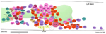
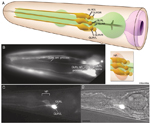
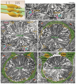
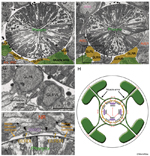
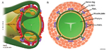
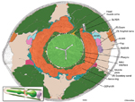

Handbook - Hermaphrodite
Muscle System GLR Cells see also Introduction Somatic Muscle Nonstriated Muscle Head Mesodermal Cell
3 List of cells
Figures  GlrFIG 1 - Nuclei positions in the nerve ring  GlrFIG 2 - GLR cells and their processes  GlrFIG 3A-D - Fine structure of the GLR cells  GlrFIG 3E-H - Fine structure of the GLR cells  GlrFIG 4 - Muscle arms of the head muscles  GlrFIG 5 - Color coded TEM of muscle arms from posterior head muscles